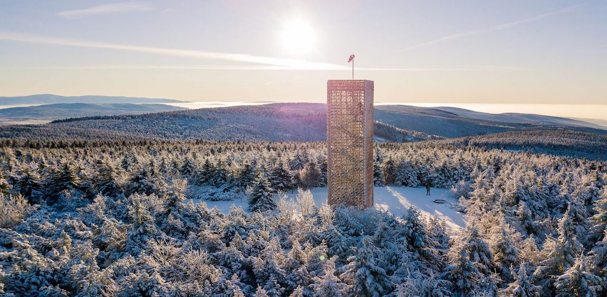
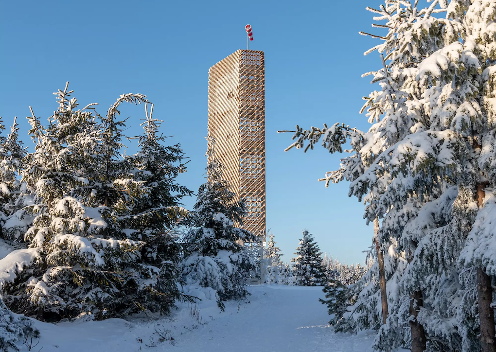

Skicentrum Říčky
Ski centrum Říčky se nachází v Orlických horách na jihovýchodní straně vrchu Zakletý. Díky své nadmořské výšce, moderní lanovce, výhodné orientaci sjezdových tratí, jejich délce a systému technického sněhu se jedná o nejlepší středisko sjezdového lyžování v Orlických horách. Areál se nachází na jihovýchodní straně vrchu Zakletý v nadmořské výšce 740 – 992 m n. m. Díky své nadmořské výšce, moderní lanovce, výhodné orientaci sjezdových tratí, jejich délce a rozmanitosti a systému technického sněhu se jedná o jedno z nejlepších středisek sjezdového lyžování v Orlických horách a zároveň jedno z předních středisek v České republice. Areál disponuje zmodernizovaným zasněžovacím systémem, který umožňuje produkci sněhu i při vyšších teplotách. Areál disponuje 6sadačkovou lanovou dráhou s bublinou a nabízí tři sjezdové tratě různých obtížností, vhodné jak pro rekreační lyžaře, tak i velmi zkušené a náročné sjezdaře. Ski centrum je vybaveno výkonným zasněžovacím systémem a nejmodernější technikou na úpravu sjezdových tratí. Pohodlný odbavovací systém, prostorná lyžařská škola s pohyblivým pásem, kolotočem a dalšími pomůckami pro efektivní výuku jízdy na lyžích nebo snowboardu.
Na Velkou Deštnou se můžete vydat jak pěšky, tak na kole. Hora s rozhlednou je přístupná z autobusových zastávek Deštná, Šerlich a Masarykova chata. Nejpohodlněji a s nejmenším převýšením Velkou Deštnou zdoláte po červené Jiráskově horské cestě ze Šerlichu. Poctivé stoupání se vším všudy vede na nejvyšší vrchol Orlických hor z Bedřichovky, nebo ze Zákoutí v Deštném s malým odpočinkem v Luisině Údolí.
